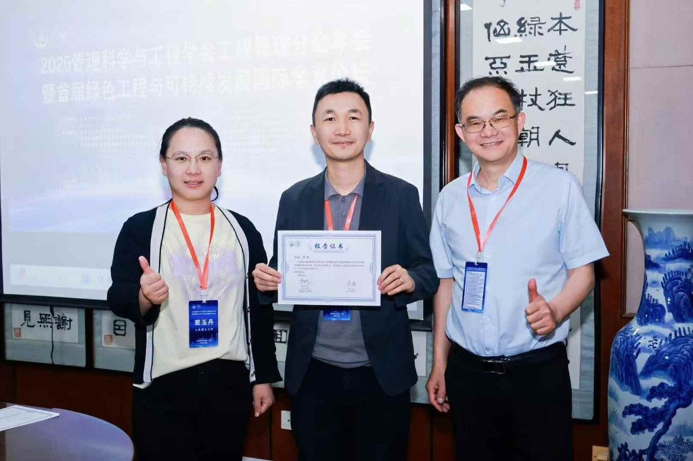

2025年5月10至11日，谭坦 参加在中国陕西省西安市举办的2025管理科学与工程学会工程管理分会年会暨首届绿色工程与可持续发展学术论坛。
他作题为“生成式AI驱动的工程设计：知识共创与人智协作”的学术汇报，介绍生成式人工智能如何支持工程设计中的知识共创与人智协作。
谭坦分享生成式 AI 驱动的工程设计研究。

2025年5月10至11日，谭坦 参加在中国陕西省西安市举办的2025管理科学与工程学会工程管理分会年会暨首届绿色工程与可持续发展学术论坛。
他作题为“生成式AI驱动的工程设计：知识共创与人智协作”的学术汇报，介绍生成式人工智能如何支持工程设计中的知识共创与人智协作。